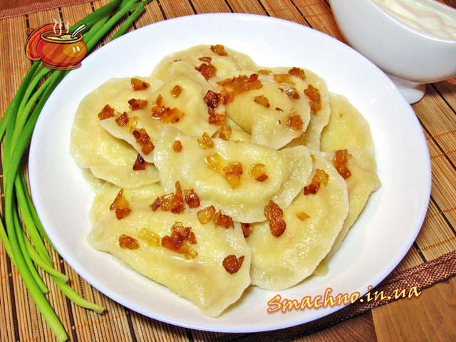

Два рецепти з картоплі
Вареники з картоплею

Необхідні інгрідієнти
- Картопля
- Яйця
- Вода
- Сіль
- Перець
- Борошно
- Цибуля
Приготування
Тісто
Просіваємо гіркою борошно, робимо зверху поглиблення і акуратно вбиваємо
туди яйце, солимо за смаком.
Починаємо розмішувати, поступово додаючи воду або молоко. У міру потреби
додаємо борошно і вимішуємо, поки не вийде однорідне і пружне тісто.
Начинка
В цей час готуємо начинку, для чого відварюємо очищену картоплю в злегка
підсоленій воді. Очищуємо і подрібнюємо цибулю, яку необхідно злегка
пасерувати на рослинній олії до золотистого кольору. Гарячу картоплю добре
розминаємо і з'єднуємо з піджаркою з цибулі, перчимо до смаку.
Варимо
Відварюємо вареники з картоплею 5-7 хв. (поки не спливуть) в злегка
підсоленій воді. Особливо добре смакує готова страва зі сметаною.
Деруни
Інгрідієнти
- Яйця
- Картопля
- Цибуля
- Олія
- Сіль
- Перець
Приготування
-
Картоплю і цибулину очистіть і натріть на дрібній тертці. Тріть картоплю
і цибулю поперемінно, періодично перемішуючи отриману масу. Цибульний
сік не дасть картоплі швидко потемніти.
- Додайте яйця і борошно і добре перемішайте масу
- Посоліть і поперчіть тісто на смак. Добре перемішайте.
-
Розігрійте в сковороді 2-3 ст. ложки олії. Ложкою набирайте картопляну
масу, викладайте на сковороду круглі оладки. Перевертайте оладки, коли
нижня сторона добре підрум'яниться.
- Подавайте деруни теплими, зі сметаною або овочевим асорті.
Смачного!!!